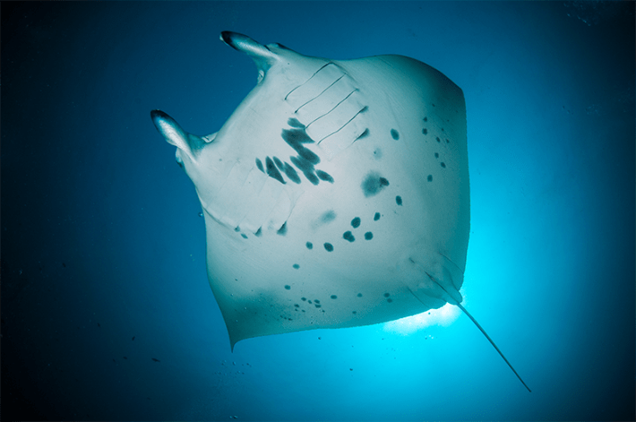
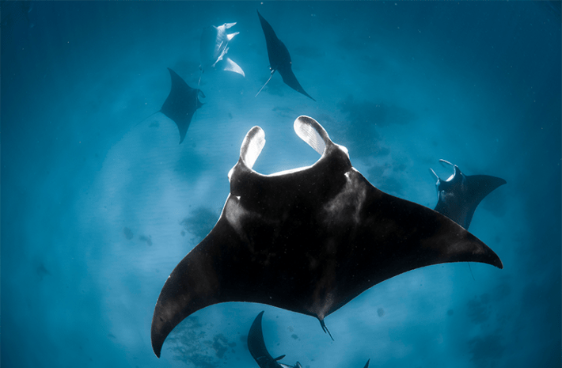

On a crystalline afternoon in a calm patch of the South Pacific with the sun coming hard across the sky and nothing on any horizon but endless saline blue, a gangly 92-year-old woman pitched backward over the gunwale of a 5-meter dive boat and sank wakeless into the sea.
Curled up like a fetus from the plunge, she relaxed, unfolded, and surrendered to sinking. She dropped face-upward through the bright top layers of the photic zone. The weight around her waist pulled her down. Pressure built against her frail frame, and the surrounding water darkened. She looked upward through that undulating membrane between two worlds as it receded 10, then 20 feet above her.
For decades, Evie Beaulieu had nursed a secret wish to die diving. But not today. Today, she had one last task to finish. She was on this island for a single reason: To compile another book before she died. To try one more time to make the land dwellers love the wild, unfathomable God of waters. To give the smallest hint of creatures so varied and inventive and otherworldly that they might compel humility and stop human progress in its tracks with awe.
One of those creatures had brought her to this reef, a massive-brained, flattened torpedo with a skeleton half the density of bone, a fish who achieved stunning speeds with one beat of its huge wings, who put its truck-sized body through graceful loop-de-loops, grazed in geometric formations, lofted its thousands of pounds into the air, and played in curiosity with the world around it as with a toy. A creature born swimming, and swimming ceaselessly every moment of its life, even as it slept. If she could tell someone, evoke even one reader’s wonder and love ...
Eight years shy of a century, the last person ever to have used the earliest aqualungs sank faceup through the sunlight zone. The girl was trapped now in a failing body, hammered thin by use, her muscles wasted, her bones ready to snap at the slightest impact. But here, in water, she was strong and well. Here, in the warm seas of the Tuamotus just out of sight of land, all she had to do was breathe.
Play was evolution’s way of building brains, and a giant oceanic manta sure used it.
She did just that, sinking down toward the edges of the submerged seamount. Below her, an active cleaning station she called Makatea Spa teemed with more workers and clients than most successful urban businesses. Cleaner shrimp and wrasses removed the parasites, while dozens of customers waited patiently in the lobby of this combined surgery, dental office, and health resort. How a parliament of so many varied species managed to form these ad hoc, mutualistic communities Evelyne still didn’t know, despite a lifetime of watching. But, gliding into the site, she could see the subtle acts of retaliation and self-policing that stabilized the rules of the win-win game. Despite occasional cheating—more by cleaners than clients—the honor system worked. Creatures that anywhere else would have ended up as prey swam unharmed into the jaws of predators who held still while being serviced, even letting the cleaners steal little bites out of them. To Evelyne’s eyes, the safe boundaries of this neutral DMZ resembled the magic circle of children’s play.
Her pulse rose: A handful of reef manta rays—Mobula alfredi—hovered above a coral outcrop, faced into the current, waiting to be cleaned. A few more traced graceful circles farther back in line. Evie made out many old friends. Kaute, Sandy, Tomo: every manta had a unique pattern of spots on their white underbellies, ventral patterns as distinctive as fingerprints. A serpentine mark just above the right pelvic girdle confirmed Mona, one of her favorites, who turned and floated up to say hello.
It happened more often now, when Evelyne came to the Spa. One of the mantas circling for their turn would sniff her out, curious to learn what this strange daily visitor to the seamount wanted. The lateral lines that ran along the sides of their bodies detected Evelyne’s presence at a distance. Jelly-filled canals beneath pores just behind their eyes could feel her magnetic field.
Whatever senses were at play, more than one manta recognized her. Evie was sure of that. After all, these were beings who recognized their own selves in a mirror, something that dogs and cats and even some of the smartest primates failed to do. Mona slowed down around the familiar visitor, beating her fins. She banked and came about, wanting to socialize. Beaulieu, for her part, waved back to Mona, settling on a series of repeated gestures that she hoped would convey, Yes, it’s me, hello, I know you, too.

Photo by Umeed Mistry / Ocean Image Bank
She lost herself in watching, the great pleasure of her life. So her whole body jerked in alarm when a great shadow passed over her, darkening the water. She twisted around and looked up to see a creature with a wingspan wider than the house she now lived in gliding above her head: Mobula birostris—the giant oceanic manta ray—perhaps 30 years old and 6 meters across from tip to tip. Beaulieu watched it through flawless tourmaline—a massive male whose clasper extended well past his pelvic fins. She had glimpsed this leviathan two days before, but from a distance. Here he was, so close she could feel his wake: a great chevron-morph goliath she called the Loner.
She held her breath. He drifted above her, a floating refuge for scores of other beings. Two species of remoras clung to him, hitching rides. Copepod colonies camped out all over his surface and inside his gills and spicules. Young golden kingfish surfed the pressure waves pushed forward by the great ray’s bow.
So little was known about the giant oceangoers. They were much larger than their reef cousins. Near to land, at a way post like this, they were often solitary. They roved throughout the band of tropical waters that circled the Earth. Their ampullae of Lorenzini sensed the Earth’s magnetic fields and the fields generated by great currents, keeping them on a straight course through vast tracts of featureless ocean. But how far they migrated and the paths they took were so much mystery. Sailors talked about great feeding aggregations in the middle of nowhere, thousands of miles from land.
It saddened Evelyne that she would never be able to verify that. But this one, the creature in front of her at this moment: this gigantic Loner, she could verify. The ray hovered above Evelyne in the water column, blotting out a disk 20 feet across. He drifted like a stealth jet in the world’s slowest flight. Impossible not to see him as a gigantic, oceangoing bird flying through the water. No wonder that the people of these islands had long considered these creatures sacred—the spirit guardians and promoters of grace, wisdom, and flow. From underneath, looking up into the filtered sun, she found the Loner’s pale belly surprisingly hard to make out—a ghost as diffuse as his black dorsal silhouette would appear to anyone looking down on him through the darkening waves. Countershading—Thayer’s law: a trick that fish had used for the last 150 million years to make themselves disappear both into and against the light.
The ray hovered above her. He drifted like a stealth jet in the world’s slowest flight.
The camouflage that had worked for millions of years was no longer enough. Left alone, a manta might live for four decades or more. But life expectancy was plummeting. The odds were good that the gills of many of the creatures now grazing off this secret seamount would end up in sacks sold in markets in Guangzhou and other Chinese ports, peddled as medicines, but which did nothing at all. What was left of a ray after its chunks of feathery gill plates were cut out would be used as bait or fed to increasingly hungry coastal humans. Mantas were disappearing from places throughout the Pacific where they had once been numerous. Even now, not far from where Evie swam, shadowy boats with captive crews were busy poaching rays, and the impoverished country had no money to police the illegal trade.
So stunning was the Loner’s silhouette as he passed overhead that Evelyne gasped into her air hose. Her gasp turned into bubbles that rose through the water and tickled the manta’s underside. The bubbles trickled upward into his gill slits. The Loner proceeded to cough the air through his branchial filaments and out of his own mouth. The burst of bubbles dislodged all kinds of stuck particles, sending the cleaners into an orgy of feeding.
The ton and a half of cartilaginous fish circled back and slowed just inches above Evelyne’s head. Startled, she blew another burst of bubbles. The ray drew them into his gills and blew them back out. There were no more trapped particles to dislodge, but the Loner persisted. What had been a purely functional maneuver became something else: novelty-seeking, or enjoyment of the feel of the air’s caress.
The fish banked back around for one more go. Approaching, he studied her with his huge doe eyes. Evelyne exhaled another column of bubbles. This time, the Loner simply swiped at the bubbles with his left pectoral fin for the sheer pleasure of dispersing them.

Photo by Emilie Ledwidge / Ocean Image Bank
The behavior floored her, although a part of her knew it shouldn’t. Mantas had a brain-to-body ratio far higher than most fish, as high as many mammals. A giant oceanic manta ray brain was the largest and heaviest of any animal that breathed water. The telencephalon and cerebellum—parts of the brain devoted in mammals to higher functioning—were enormous. And this remarkable brain was wrapped in a rete mirabile—a “miraculous net” of blood vessels that would keep the Loner’s neurons warm to depths of almost half a mile.
Years of study had convinced Evelyne that mantas were far smarter than the world suspected. She had spent too many decades of close observation to be cowed any longer by the prohibition against anthropomorphism. What began, centuries ago, as a healthy safeguard against projection had become an insidious contributor to human exceptionalism, the belief that nothing else on Earth was like us in any way. At her age, Evelyne Beaulieu had no more time for demure self-censorship. A good empiricist, she felt no qualms about giving the behavior in front of her a name. The way the Loner toyed with her air bubbles was clear enough. Call it what the evidence suggested. Call it what it looked like: The giant bird-like fish was playing.
Play was evolution’s way of building brains, and any creature with a brain as developed as a giant oceanic manta sure used it. If you want to make something smarter, teach it to play. No one denied the play of mammals. She had played keep-away with dolphins off the Caymans. She’d watched bears wrestle and lions dance, a colt and an elk calf play catch, and chimps bluffing each other in something that looked like three-card monte. For years the family dog had bowed to her, begging her for a romp.
But even fish played: She needed to tell the world this, before she died. Captive cichlids played hockey with pebbles in their tanks. Bettas enjoyed tag. She’d seen cuckoo wrasses chase laser pointers around long after the sport offered nothing but exhaustion. And now a manta with no more need of her air was coming back for more.
Above Evelyne, the Loner climbed so steeply that the flat disk of his body curled over into a full backflip. The flip allowed the titan to see behind and above him, but surely the acrobatics were also fun. The great beast slipped from the loop into a barrel roll that brought him back around and pointed him at Evelyne. Ready or not, here I come.
Evelyne steadied herself as if for a pick-and-roll, and as the fish passed by once more above her, she spoke into her mouthpiece, “Your move!”
The Loner caught the bubbles of her words under one fin and held them there for as long as he could. Evelyne could almost hear the creature echo the giggle that tore out of her. Nothing in life matched a game of catch between cousins whose last common ancestor had lived 440 million years ago. 
Excerpted from Playground: A Novel. Copyright © 2024 by Richard Powers. Used with permission of the publisher, W. W. Norton & Company, Inc. All rights reserved.
Lead photo by Umeed Mistry / Ocean Image Bank
Källförteckning
- Originalartikel: https://nautil.us/manta-rays-at-play-1204569/